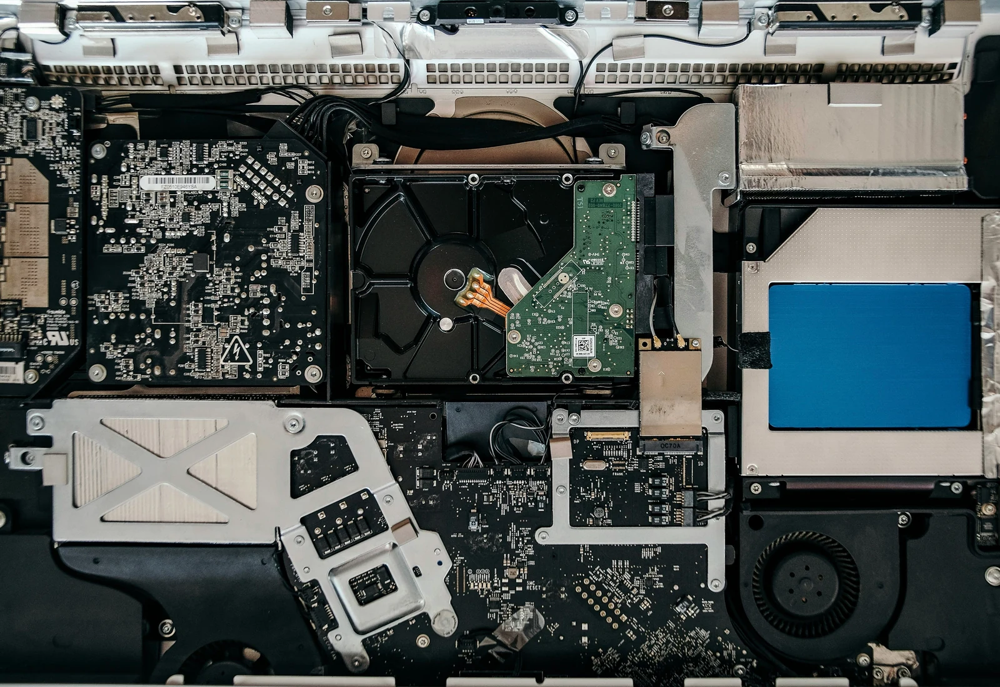
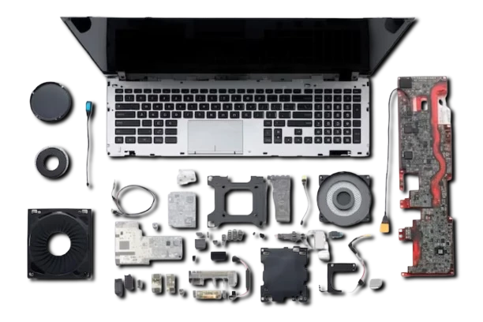
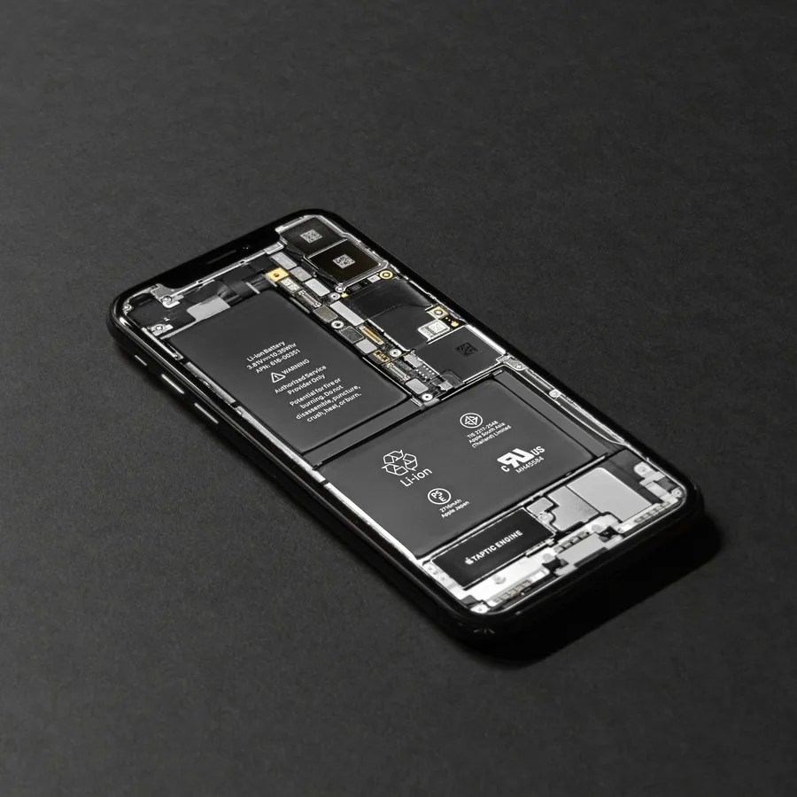
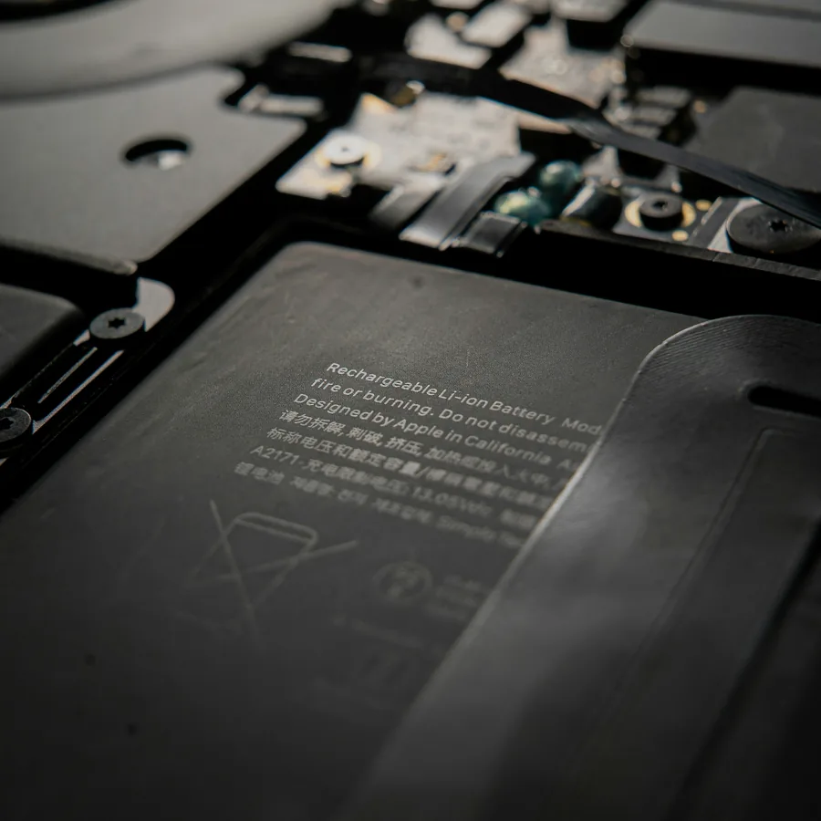
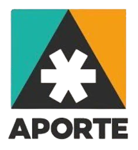

Especializada em dispositivos Apple
Diagnóstico preciso. Solução confiável.
Assistência técnica para MacBook, iMac, iPhone e iPad em Recife, com atendimento direto, orçamento transparente e serviço realizado pela equipe da iCanada.
- Sem terceirização
- Loja física
- Mais de 6 anos de experiência

Atendimento técnico
Seu Mac não liga ou não carrega?
Avaliamos a causa antes do reparo
Principais serviços
Soluções para cada tipo de falha.
Atendimento especializado com análise técnica antes da indicação de troca de peças.

Especialidade
Placa lógica e reparo avançado
Diagnóstico eletrônico, microssolda, falhas de alimentação, equipamentos que não ligam e danos provocados por líquido.
MacBook
Teclado, trackpad e estrutura
Substituição e avaliação conforme o modelo e a falha apresentada.
iMac
Manutenção, upgrade e reparos
Diagnóstico, SSD, limpeza, fonte, sistema e reparos internos.
iPad
Tela, vidro e touch
Avaliação de danos físicos, falhas de imagem e sensibilidade.

iPhone
Bateria, tela e câmeras
Serviços de manutenção conforme o modelo e a disponibilidade.

Energia
Bateria e carregamento
Falhas ao carregar, desligamentos e bateria com manutenção recomendada.
macOS
Sistema, backup e desempenho
Instalação, atualização, formatação, backup e recuperação de uso.
Especialidade técnica
Reparo que começa pela causa da falha.
Antes de indicar troca de peças, o equipamento passa por análise técnica. Isso permite apresentar uma solução coerente com o estado do aparelho e com o custo do reparo.
Diagnóstico em bancada
Investigação do sintoma e dos circuitos relacionados.
Orçamento explicado
Serviço, prazo e valor informados antes da execução.
Reparo e testes
Procedimento realizado após aprovação e validado antes da entrega.
Empresas atendidas
Confiança também no atendimento corporativo.
Empresas e instituições que já confiaram seus equipamentos à iCanada Reparos.

Como funciona
Um processo simples e transparente.
O cliente acompanha as etapas e aprova o serviço antes de qualquer reparo.
Contato
Informe o modelo e descreva o problema pelo WhatsApp.
Recebimento
O equipamento é registrado e encaminhado para avaliação.
Diagnóstico
A causa é analisada e o orçamento é apresentado.
Reparo e entrega
Após aprovação, o serviço é executado, testado e entregue.
Avaliações
O resultado aparece na experiência dos clientes.
Relatos sobre atendimento, diagnóstico, transparência e qualidade do serviço.
Geoffrey TaberDesigner gráfico
★★★★★
“Excelente serviço a preços razoáveis para Mac. Trocou a tela e limpou meu MacBook Pro; ficou como novo outra vez.”
Edilson SuameAdministrador
★★★★★
“O atendimento foi excelente e o problema resolvido com sucesso. O diagnóstico foi dado na mesma hora e o preço foi justo.”
Anderson LuizTI / Cyber Security
★★★★★
“O atendimento foi perfeito. Meu Mac 2011 havia sido condenado e voltou a funcionar perfeitamente e atualizado.”
Jonatas CâmaraPsicólogo
★★★★★
“Aquele tipo de serviço completo, em que você sente que é atendido com atenção. E o café é bom.”
Monally AlvesEnfermeira
★★★★★
“Ótimo atendimento, profissionalismo e transparência. Um ponto muito importante em um mercado que nem sempre oferece profissionais dessa qualidade.”
Lucas EmanuelFotógrafo
★★★★★
“Melhor assistência para produtos Apple do Recife. Honestidade e eficiência no mesmo lugar.”
Alexandre MarquesTI / Cyber Security
★★★★★
“Ótimo atendimento e profissionalismo da empresa. Recomendo a todos!”
Bruno MirandaDesenvolvedor
★★★★★
“Ótimo atendimento e profissionalismo da empresa. Recomendo a todos!”
João HenriquePersonal trainer e empreendedor
★★★★★
“Diagnóstico exato, sem demora e ambiente super agradável. Excelente atendimento e profissionalismo. Indico 100%.”
Dúvidas frequentes
Informações antes de levar seu equipamento.
Para casos específicos, envie o modelo e descreva o sintoma pelo WhatsApp.
Precisa agendar o atendimento?
O atendimento pode ser realizado sem agendamento, conforme a disponibilidade do dia. Para evitar deslocamento desnecessário, confirme antes pelo WhatsApp.
Quais equipamentos são atendidos?
MacBook, iMac, iPhone e iPad. A disponibilidade do serviço depende do modelo, ano e tipo de falha.
Vocês realizam reparo de placa lógica?
Sim. Realizamos diagnóstico eletrônico, microssolda e reparo em nível de componente quando o serviço é tecnicamente viável.
Fazem backup antes da formatação?
Sim, quando o armazenamento ainda permite acesso aos dados. A necessidade e o valor do backup são avaliados antes do procedimento.
O reparo começa imediatamente?
Primeiro é realizada a análise técnica. O serviço começa somente depois que o orçamento e o prazo são informados e aprovados.
O serviço possui garantia?
A garantia varia conforme o serviço e a peça utilizada. As condições são informadas no orçamento e na ordem de serviço.
A iCanada é uma assistência autorizada Apple?
A iCanada Reparos é uma assistência técnica independente especializada em dispositivos Apple e não possui vínculo ou autorização oficial da Apple Inc.
Atendimento rápido
Conte o problema do seu equipamento.
Envie o modelo e o sintoma para receber a orientação inicial.
Contato e localização
Visite a iCanada Reparos.
Atendimento em loja física no bairro de Parnamirim. Confirme a disponibilidade pelo WhatsApp antes de se deslocar.
Sala 23 · Parnamirim
Recife — PE · CEP 52060-010
10h–12h / 14h–17h
Sábado 10h–16h